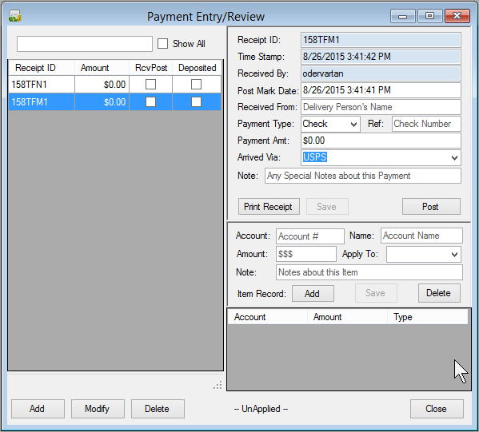
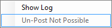
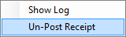
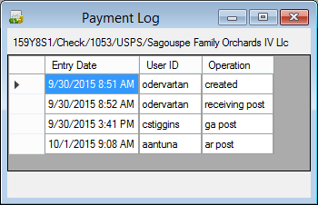
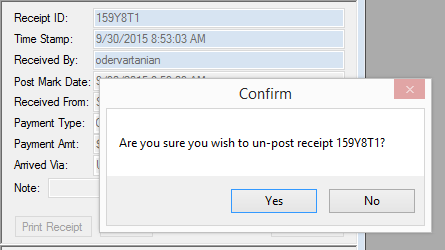

Payment Entry
The purpose of this window is for initial payment entry.
After a payment is physically received, the user will add
a new record into this interface.

The left side of the screen lists any un-posted records. When a user selects a payment
in left grid, details about the payment will be displayed on the right side.
Here are the fields available to the user.
- Receipt ID: This is a unique id generated by system. It is basically a compressed date and time value.
- Time Stamp: Local date and time when the receipt record was created.
- Received By: The user id of the person creating the record.
- Post Mark Date: This is also loaded with the current local date and time.
The user can change this value if required.
- Received From: Use this field to enter the person's name that delivered the payment.
- Payment Type: This is a combo box, and the options available include:
- Ref: This is available for a check number or other type of document reference.
- Payment Amt: Used to enter the payment amount.
- Arrived Via: This is a combo box, and options available include:
- USPS, United States Postal Service
- Person
- UPS, United Parcel Service
- Fedex
- Other
- Note: Used to describe any other information required for this payment.
The left grid offers one of two context menus depending on the selected record:
or

- Show Log: will display a list of log records found in the table TblLog, for the selected receipt.
Here is an example of a log listing:
- Un-Post Not Possible: This option is available when the record has been
associated with a WMIS record. In order to un-post this type of record,
you will likely need to dis-associate the receipt with a WMIS batch.
- Un-Post Receipt: This option is available when the record has been marked as
posted, and not associated with WMIS.
If you select Un-Post, you will likely be presented with a confirmation window similar to the following:

The lower right panel is used to describe how to apply the payment.
- Account: This is the account number.
- Name: Name of the Account. This is filled with the account name automatically if the user enters a valid account number.
- Amount: This is all or part of the amount specified above in the "Payment Amt:" field.
- Apply To: This is a combo box, with options:
- Water
- LnBase: Land Based
- Assess: Assessment
- Other
- Note: Used to describe any information required for this part of the payment.